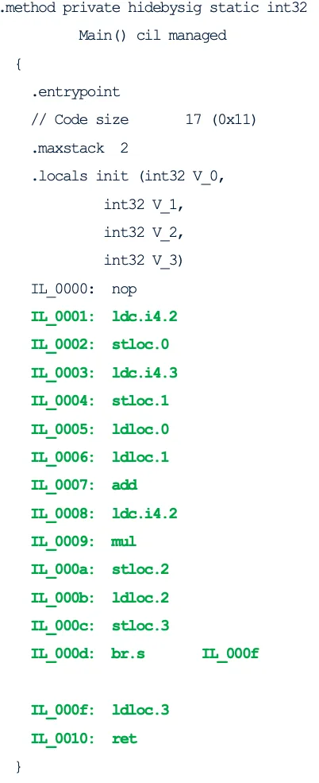

Background
Andrew’s interest for computing started when he learnt to program on his Atari 800XL as a child. He has worked in research labs for computer vision and machine learning and has produced toolchains for embedded systems. More recently, with BJSS, he has worked on frontend and backend systems for medical and financial clients.
Outside work he is a keen runner and enjoys spending time with his family and taking their dog out for walks in the countryside.
As developers, we rely on compilers everyday to produce and run our programs. They are often seen as a blackbox so it can be hard to understand code generation issues, for example if the code is not performing as expected. This article will explore their inner workings, to provide you with a greater understanding of how they work.
What is a compiler?
A compiler translates a set of source files into a program that can be run. This breaks down into four main areas:
- Checking the source files are valid.
- Translating the program into a set of operations.
- Optimising the program.
- Generating code that can be run on the target machine.
To check the source files are valid the compiler needs to perform syntax analysis followed by a semantic analysis. The source files are then translated into an intermediate language which describes the program using a set of operations. Once in this form the program can be optimised by performing a set of code optimisations. Finally, code can be generated for a target machine by performing machine code generation to translate the intermediate language into target machine instructions.
Let's look at each stage in more detail.
Syntax analysis
Syntax analysis checks that the source file follows the grammar of the programming language. It is performed in two stages. Firstly, tokenization , which breaks the program down into its language elements (tokens) such as symbols, numbers, and keywords.
Next, parsing is performed. This takes the set of tokens and tries to match them against a set of rules describing the grammar of the programming language. If parsing is successful a parse tree is generated.
Below is an example grammar that describes simple arithmetic expressions. The CONSTANT token will match numbers and the VARIABLE token will match variable names. The Expr grammar will then match adding, subtracting, multiplying or dividing variables or constants.

For example, when the following expression a+b*2 is parsed using the previous grammar the following parse tree is generated.

Next, we need to convert the parse tree into a simpler tree-based representation called an Abstract Syntax Tree (AST). This is a reduced form of the parse tree, which more closely matches the actual program making it is easier to use in the next stages of the compiler. The AST for our parse tree would look like this.

Semantic analysis
Semantic analysis checks that the “meaning” of the program is valid; for example, “Time flies like an arrow” is grammatically correct, but not semantically correct. Semantic analysis is typically only performed for static languages like C# and Java. One key area it is used for is type checking. This relies on the type information of things like variables, methods and classes collected during the syntax analysis phase, which is stored in a symbol table. Type checking checks that:
- Variables are defined before they are used.
- Variables are assigned data of the correct type.
- Expressions are using constants or variables of the content type.
- The arguments provided to a method call are of the correct type.
- The correct number of arguments are provided to a method call.
Intermediate language generation
The next stage is to convert the AST into an intermediate language which represents the program as a set of computational operations like loads, stores, add or multiply. The compiler translates the AST into the intermediate language by converting each of the sub-nodes into sets of intermediate language operations. A common intermediate language approach is to use bytecode which represents a set of simple operations that operate on a stack. For example, in dynamic languages Python uses Python bytecode, and Ruby uses YARV. In static languages Java uses Bytecode and .Net uses Common Intermediate Language (CIL).
As an example, to the right we can see the CIL generated for the following C# program:

Let’s examine the main set of bytecode operations highlighted in green. The first two operations are for setting up the value of variable a. The value of 2 is pushed onto the stack using the ldc operation, and then it is popped off the stack and stored in local slot 0 using the stloc operation. The next two bytecode operations perform the same sequence to set up the value for variable b storing it in local slot 1.
Now we need to perform the calculation of variable c. Firstly, we need to perform the addition operation. using the ldloc operation we push back onto the stack the values of variables a and b. Then we pop them both off the stack and add them together using add and push the result back onto the stack.
Next comes the multiplication operation. We push the value of 2 using the ldc operation onto the stack. Then we pop off the previous addition result and the value 2 from the stack and multiply them together using the mul operation, pushing this result back onto the stack.
Next, to store the result in variable c we use the stloc operation to pop the value off the stack and store it in local slot 2. To return the result back to the caller of this function we push the value of variable c back onto the stack using ldloc then pop it off the stack and store in local slot 3 using stloc.
Finally, we jump to where we will be returning from the function (using the br operation), here we push the value of the return result back onto the stack using ldloc and use the ret operation to pop the result off the stack and return this back to the calling function.
Code optimisers
Once the program has been translated into an intermediate language there are typically optimisations that can be applied, so that when it is converted into the final set of target machine instructions their performance and/or size is improved. Some example optimisations include:
- Removing repeated code
- Removing unused or dead code
- Constant propagation
- Constant folding
- Loop unrolling
- Removing redundant load/stores
Constant propagation involves replacing variables which have a constant value with their actual value. For example, a = 6; b = a + 2 would become a = 6; b = 6 + 2.
Constant folding involves reducing arithmetic expressions involving constant values with the final resulting value. For example, a = (6 * 5) + 4 would become a = 34.
Loop unrolling involves changing code that uses a loop into a repeated set of operations. This means that there is less of a branch penalty when the code is run. For example:

Would become:

Generating target machine code
Machine code generation involves converting the intermediate language into target machine code. One approach is to perform ahead of time compilation. This is the approach used by compilers for languages like C++ or Go. These take intermediate language generated from the source files, optimise it, and map it down onto target machine instructions, outputting the result as a binary file.
An alternative approach used by languages like C# and Java is to run the bytecode inside a virtual machine. Initially the bytecode is interpreted by sequentially performing each bytecode operation. The virtual machine also uses a stack and a frame to store the current state of the program. In some virtual machines, whilst running the bytecode it will identify regions of ‘hot’ bytecode that are executed many times. These regions are then sent to a Just In Time (JIT) compilew which will translate the bytecode into target machine code instructions. The compiler will also try to apply optimisations during the translation. When these regions of code are executed the target machine instructions are run rather than running the bytecode through the interpreter which improves performance.
The x86 machine code below shows the JITed code for the bytecode in the previous example. The highlighted machine instructions in green are doing the actual work to perform the calculations. In the x86 instruction set rax and eax represent different sections of the ax register. For simplicity I will just use ax in this explanation. Firstly, we push the value of 3 onto the stack and then load it back into register ax. Then, using the lea (load effective address) instruction we double ax and add 4 to it. Finally, we return from the function using ret and the caller of the function will be able to access the result in register ax.
Note that a lot of the redundant bytecode operations that load to and from the local storage have been removed. Also, the addition and multiplication operations have been combined together into one machine instruction to improve speed and reduce the size of the code.

Conclusion
This article has covered the different stages a compiler goes through to be able to run your program on a target machine and has shown you examples of what happens at each stage. In a follow-up article we will explore code performance in a more detail, and will look at the compilers used for dynamic programming languages and how they produce high performance code.